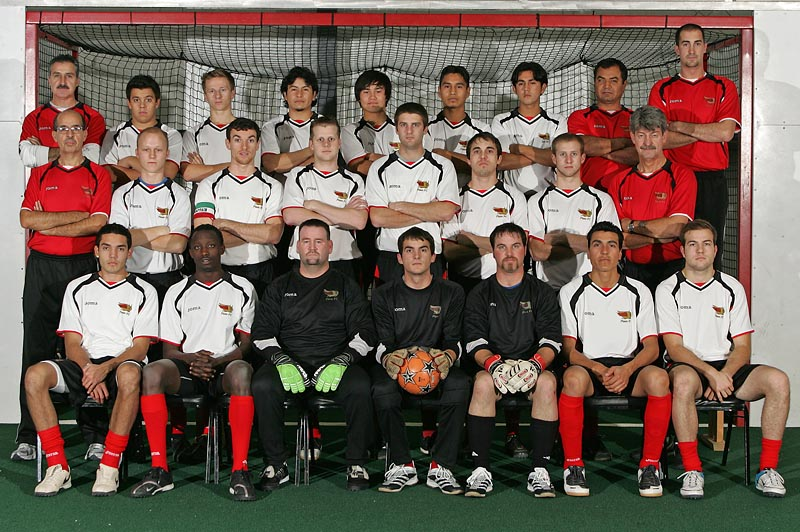
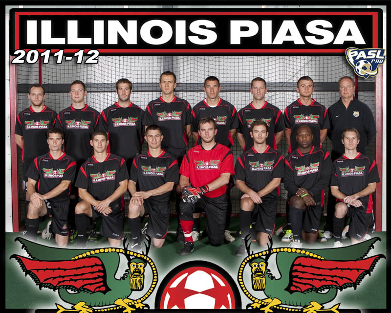
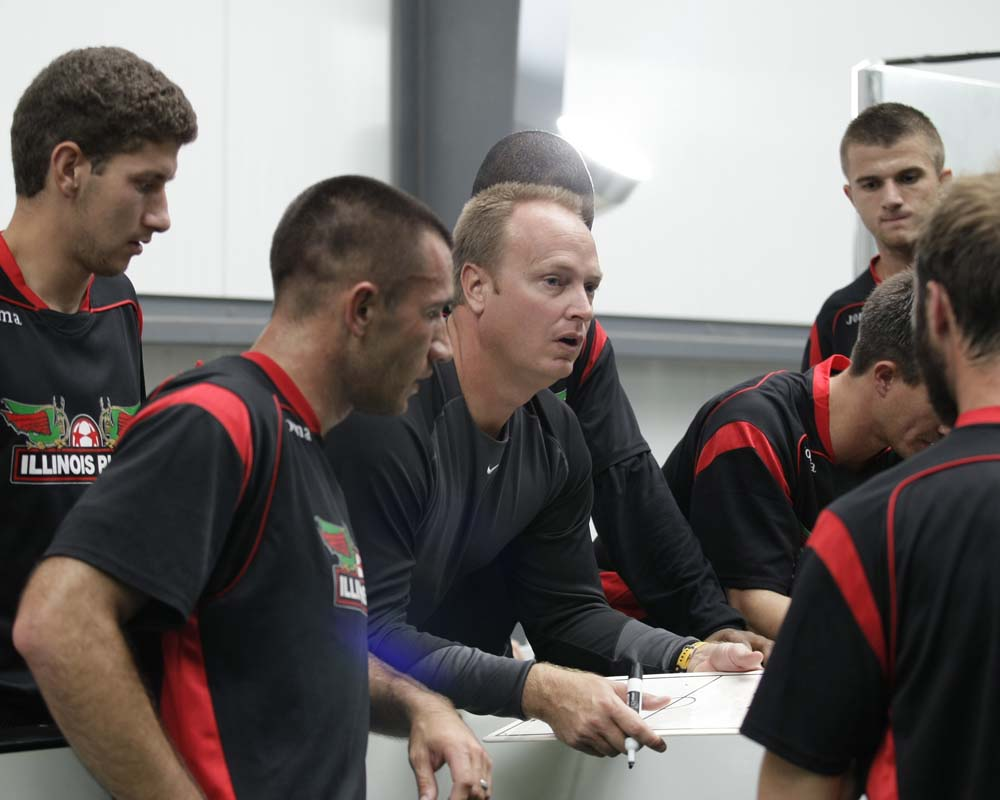

Here's a link to an article about the team: Illinois Piasa pro team provides soccer youth with another goal
Pie-a-Saw - Brad DeMunbrun
Early Years
In 2007 I co-founded Piasa FC along with my father, Jim Williams; my business partner, Arsenio Gudino; and two long-time soccer associates, Dr. Matin Royeen and Gilberto Restrepo, who served as Piasa's first head coach (all dressed in red shirts), as an amateur team to compete in the Premier Arena Soccer League.
Piasa FC - Inaugural Season 2007/08
Going Pro
In 2010, at the PASL commissioner’s behest, we were in a position to take the team to the professional ranks in the Professional Arena Soccer League that had been founded in 2008. The team was rebranded ‘Illinois Piasa’ and the rest is history.
Illinois Piasa - Professional Arena Soccer League - 2011/12
There were good times and bad, ups and downs. I met great people and have some really good memories, despite very limited success on the field for the team.
Illinois Piasa head coach and indoor soccer legend, Joe Reiniger

Me wearing a Detroit Waza t-shirt given to me by Waza co-founder, co-owner, and head coach Dominic Scicluna
The End
By April 2014, the arduous journey was at an end. The same week I sold my team for 'next-to-nothing', my girlfriend of three years and soon-to-be-fiance, left me. My world was coming apart and I needed a plan.

Me presenting Don Popovic with his award inaugurating him into the Indoor Soccer Hall of Fame

My son, Logan Williams, with Cleveland Freeze head coach and indoor soccer legend, Hector 'The Goal Collector' Marinaro
Pursuing a New Career
After a ton of thought and discussion with family and friends, it seemed the solution was to pursue a degree that would catapult me into the world of computer programming. I have since taken classes at Southwestern Illinois College and Red Rocks Community College – Denver, CO, but when the opportunity presented itself to enroll in LC 101, I felt it was too good an to pass up.